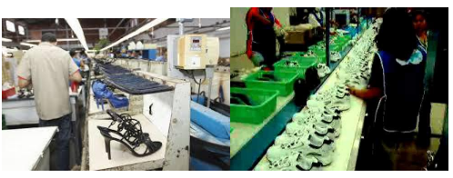
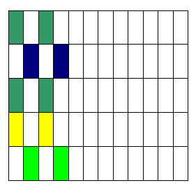
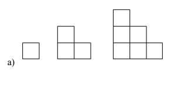
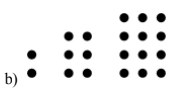
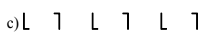
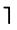
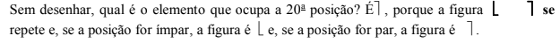

Capítulo 4
PROGRESSÕES ARITMÉTICAS E GEOMÉTRICAS NO CONTEXTO DA INDÚSTRIA CALÇADISTA
CONTEXTUALIZANDONa engenharia de produção do setor calçadista e da indústria em geral, os processos de produção são criados a partir de uma sequência de ações e da ordem de insumos que garantem tanto a otimização do processo como a qualidade da produção. Segundo Costa (2004), o fluxo de materiais consiste na melhor decisão da sequência de movimentação dos materiais por meio de etapas determinadas pelo processo e movimentação. Destacando-se o volume de itens transportados entre pares de departamentos e a frequência de movimentação.
No nosso cotidiano, nos processos produtivos, no nosso dia a dia aparecem sequências regulares recursivas, por que essas sequências estão presentes na descoberta de padrões?
Caro aluno! A partir da ideia de sequências de processos, de acontecimentos, de figuras e de números, nesse capítulo, você vai conhecer sequências recursivas, em especial, as progressões aritméticas e geométricas.
(RE)CONSTRUINDO CONHECIMENTOSO estudo das Progressões Aritméticas (PA) e das Progressões Geométricas (PG) inicia a partir do estudo de sequências figurais e numéricas que apresentam regularidades e que obedecem a um padrão.
Observe as malhas quadriculadas a seguir. Num papel quadriculado, copie-as e continue pintando as faixas, mantendo o mesmo padrão inicial.
Observe a sequência de figuras ou pontos a seguir, desenhe em seu caderno o próximo elemento da sequência e escreva o que você constata que acontece de uma figura para outra.
A próxima figura tem 10 quadradinhos terá 10 quadradinhos, portanto 4 quadradinhos a mais e a próxima terá 15 quadradinhos, 5 a mais.
A próxima figura terá 20 pontos pois aumentará 8 pontos e , na próxima terá 30 pontos aumentando 10 pontos.
Qual o oitavo elemento da sequência? 
Ao encontrar uma forma de descobrir os próximos elementos (figuras ou números) de uma sequência sem desenhar os seus elementos, você descobriu o padrão da sequência
DESCOBRINDO SEQUÊNCIAS ARITMÉTICAS OU PROGRESSÕES ARITMÉTICASVocê descobriu, na atividade anterior como se pode achar o padrão para dar continuidade ou descobrir seus elementos sem desenhá-los. Você vai, agora, estudar uma sequência especial cujo padrão é somar um termo constante ao último termo de uma sequência para obter o seguinte O termo que é somado é chamado razão e a sequência numérica que tem uma razão aditiva é chamada uma progressão aritmética.
Situação-problema.Encontrar o 20o termo da sequência 5, 9, 13, 17, 21, 25, ... sem precisar (sem recorrer) do 19o termo.
O padrão ou razão dessa sequência é mais 4 a cada novo elemento logo trata-se de uma sequência ou progressão aritmética.
Observe a sequência de adições que você pode desenvolver para achar os termos da sequência:
1o termo- a1= 5
2o termo: a2 = 9 que é 5 + 4
3o termo :a3 = 13 que é 9 + 4 ou a3 = 5 + 2 + 2
4o termo: a4 = 17 que é 13 + 4. ou a4 = 5 + 2+ 2+ 2
O próximo termo o 5o será o anterior mais 4 que é 17 + 4 = 21 ou a5 = 5 + 2+ 2+ 2+ 2
Conclui-se que se a sequência a tem uma razão aditiva obtém-se cada termo da sequência somando a razão ao anterior. Mas observe que para obter o número 21 que é o 5o termo da sequência, se somou 4 vezes a razão ao 1o termo, obtendo o 21. Veja: 5 + 4. 4 = 21
Em símbolos, a razão aditiva é r, o número de termos é n, o termo que se quer achar a(n), no caso a5, o quinto termo da sequência e simboliza-se por n-1 quantas razões serão somadas ao termo anterior.
Então, a fórmula para se achar qualquer termo de uma progressão aritmética é:
an = a1 + (n-1)r
Aplicando a fórmula resolvendo o seguinte problema inicial que desafia a achar o 20o termo da sequência.
Na sequência 5, 9, 13, 17, 21, 25, ..., o termo que se quer achar é a20 (o vigésimo termo).
O primeiro termo é 5, a1 = 5, o número de termos é 20 logo n = 20, indicado pelo número do termo que se quer achar.
Substituindo, na fórmula, os elementos que se tem vamos achar o vigésimo termo a20.
a20 = 5 + (20 – 1).4
a20 = 5 + 19.4
a20 = 5 +76
a20 = 81
Uma coisa curiosa é que você pode achar a razão de uma sequência aritmética, usando a subtração que é a operação inversa da adição.
Veja a sequência: 5, 9, 13, 17, 21, 25, ...
9 – 5 = 13 – 9 = 17 -13 = 4 1que á a razão dessa progressão aritmética. Dessa forma, dada uma progressão aritmética, acha –se a razão subtraindo dos termos consecutivos: r = a2 – a1
Com a fórmula do termo geral de uma sequência aritmética e sabendo como achar a razão, você pode achar qualquer termo de qualquer sequência,
DESCOBRINDO SEQUÊNCIAS GEOMÉTRICAS OU PROGRESSÕES GEOMÉTRICASVocê vai, agora, estudar outra sequência especial cujo padrão é multiplicar um termo constante, também chamado razão mas simbolizado por q, ao último termo de uma sequência para obter o seguinte. Essa sequência numérica que tem uma razão multiplicativa é chamada uma progressão geométrica.
Situação-problema.Encontre o 10o termo da sequência 5, 10, 20, 40, 80 ..., sem precisar (sem recorrer) do 9o termo.
O padrão ou razão dessa sequência é vezes 2 e pode-se achar essa razão que é multiplicativa, dividindo cada termo pelo seu anterior, já que a divisão é a operação inversa da multiplicação.
Assim, 10 5 = 20 10 =2, então a razão é 2 e q = 2.
Observe a sequência de multiplicações que você pode desenvolver para achar os termos da sequência:
1o termo- a1= 5
2o termo: a2 = 10 que é 5 x 2
3o termo :a3 = 20 que é 5 x 2 x 2 = 20 ou 5 x 22 = 20
4o termo: a4 = 40 que é 5 x 2 x 2 x 2 = 40 ou 5 x 23 = 40
O próximo termo, o 5o, será o anterior multiplicado por 2 que é 40 x 2 = 80 e Poe ser escrito como 5 x 2 x 2 x2 x 2 = 80
Conclui-se que se a sequência tem uma razão multiplicativa, obtém-se cada termo da sequência multiplicando o anterior pela razão. Mas observe que para obter o número 80 que é o 5o termo da sequência, se multiplicou o primeiro termo da sequência por 2 na 4a potência, obtendo o número 80. Veja: 5 x 24 = 80
Em símbolos, a razão multiplicativa é q, o número de termos é n, o termo que se quer achar a(n), no caso a5, o quinto termo da sequência e simboliza-se por n-1 o expoente em que a razão será elevada para multiplicar o primeiro termo.
E11ão, a fórmula para se achar qualquer termo de uma progressão aritmética é:
an = a1 x q(n - 1)
Aplicando a fórmula resolvendo o seguinte problema inicial que desafia a achar o 10o termo da sequência.
Na sequência 5, 10, 20, 40, 80..., o termo que se quer achar é a10 (o décimo termo).
O primeiro termo é 5, a1 = 5, o número de termos é 10 logo n = 10, indicado pelo número do termo que se quer achar.
Substituindo, na fórmula, os elementos que se tem, vamos achar o décimo termo a10.
A10 = 5 x 2(10 – 1)
A10 = 5 x 29
A10 = 5 x 512
A10 = 2560
Com a fórmula do termo geral de uma sequência geom[etriaritmética e sabendo como achar a razão, você pode achar qualquer termo de qualquer sequência,
1) Determine o 61o termo da PA (9, 13, 17, 21, ...).
2) Determinar o número de termos da PA (4, 7, 10, ...,136).
3) Numa PG de quatro termos, a razão é 5 e o último termo é 375. O primeiro termo dessa PG é
O QUE APRENDI
1. Resposta: a61 = 249
2. Resposta: A PA possui 45 termos.
3. Resposta: O primeiro termo 3.